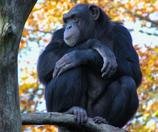

Chimpancé
Esta especie habita en el continente africano, en áreas boscosas usualmente cerca de ríos. Es conocido por la belleza de su pelaje, cuyos pelos individuales tienen diferentes rangos de colores combinados con manchas negras y grises; su lomo es generalmente gris verdoso. Cuando son jóvenes su cola es prensil y ya de adultos es un órgano de balance.